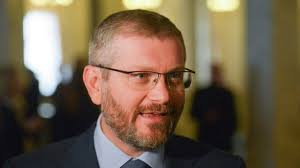

Кандидат у Президенти України Олекса́ндр Вілкул

підтримка : 4.15%
Олекса́ндр Ю́рійович Ві́лкул (нар. 24 травня 1974, м. Кривий Ріг, Дніпропетровська область) — український політик, член партії Опозиційний блок (в минулому Партія регіонів).
Колишній член Партії регіонів; депутат Дніпропетровської облради (з листопада 2010); голова Дніпропетровської обласної організації Партії регіонів, нині — в Опозиційному блоці. Син Юрія Вілкула, міського голови Кривого Рогу Дніпропетровської області.